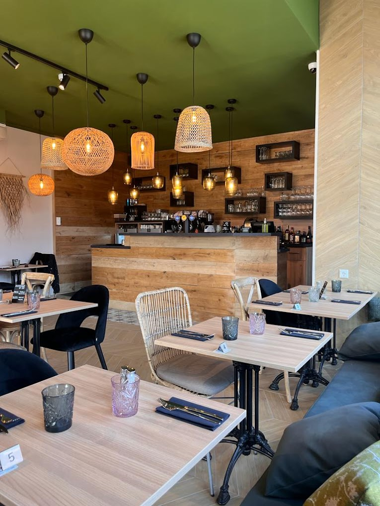
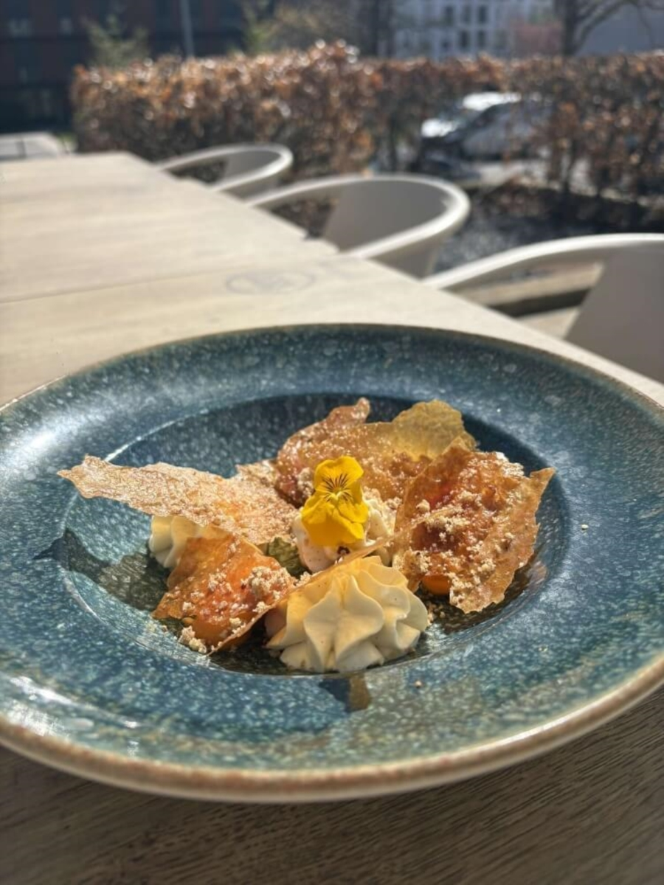
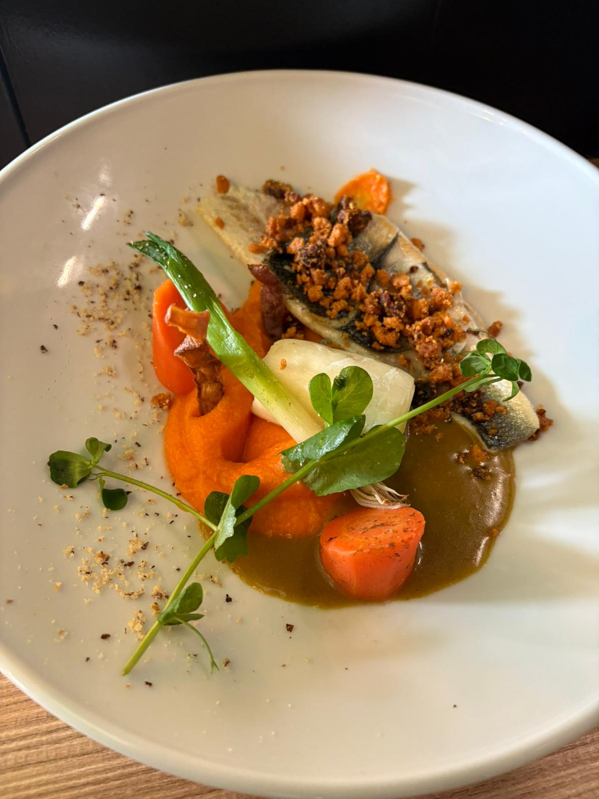
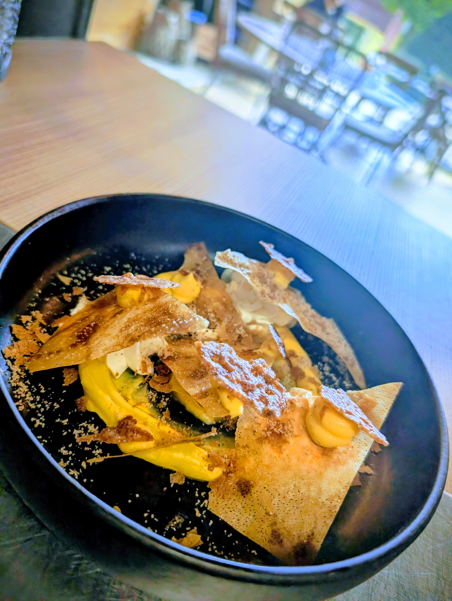
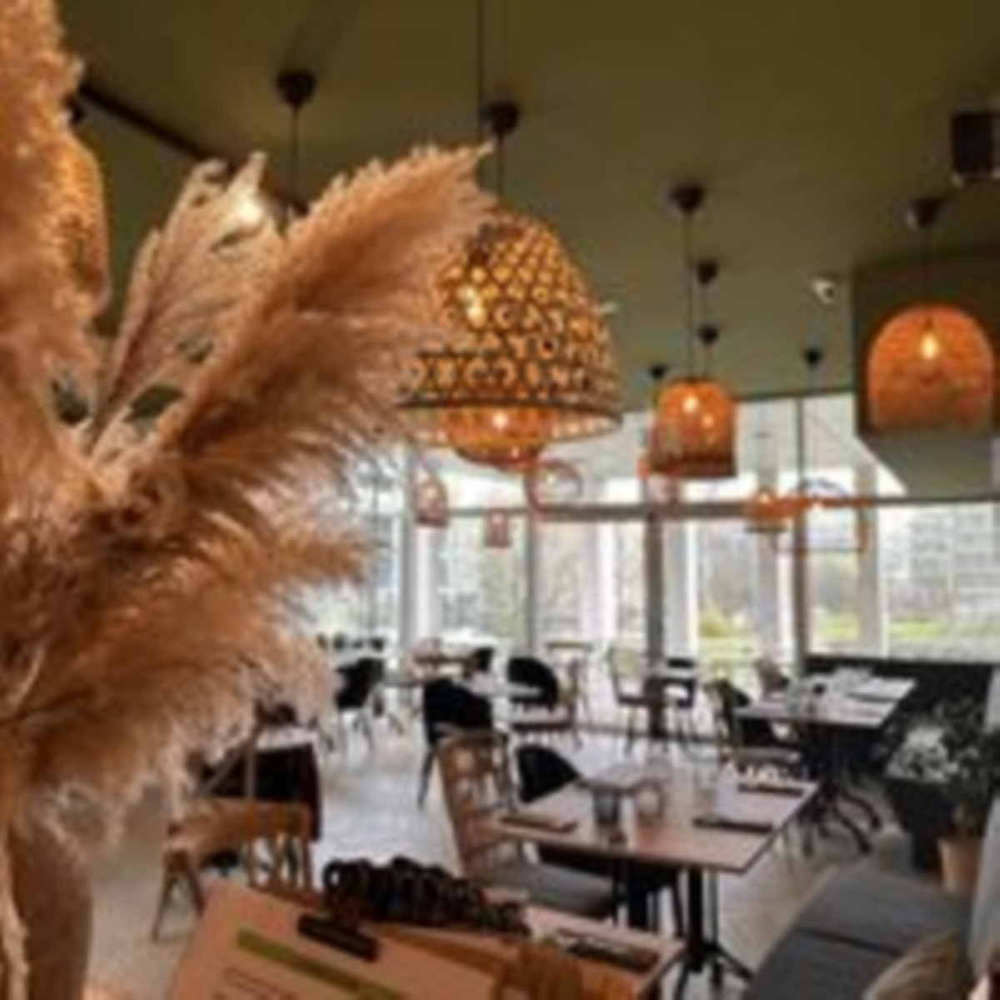

Une table discrète et chaleureuse au cœur du plateau, où la cuisine se fait maison, au fil des saisons, à partir de produits frais et locaux.

Une carte courte qui tourne au rythme des saisons. Plats, noms et prix indicatifs — à confirmer avec l'établissement.



La carte tourne selon les saisons et les arrivages. Plats, disponibilités et prix indicatifs, à confirmer avec l'établissement.
La plupart de nos produits viennent d'à côté. Voici les mains qui les font pousser, les pétrissent et les élèvent.

Plafond vert sauge, bois clair, suspensions en rotin et herbes de la pampa : la salle est baignée de lumière le jour, chaleureuse et intime le soir. Une adresse élégante mais sans chichis.
Idéale pour un déjeuner d'affaires à deux pas des bureaux, un dîner en tête-à-tête ou une petite tablée entre amis. Un espace privatif accueille aussi vos repas d'entreprise et évènements sur mesure.
Au cœur de Kirchberg. L'entrée se trouve à l'arrière du bâtiment — un détail utile à connaître.
Horaires exacts à confirmer avec l'établissement.
Cartes, Apple Pay, espèces & chèques-repas (Sodexo, Ticket Restaurant, Pluxee) acceptés — à confirmer.
Appeler pour réserver